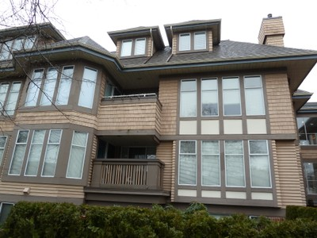
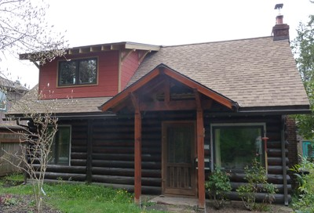

Madera [EWW]
Todos los tipos de recubrimiento de madera, incluyendo tablones de madera, tejas de madera, hojas de madera contrachapada. También incluye construcciones de madera en donde también se forma la superficie exterior de muros, tales como madera sólida.

Recubrimiento de tablones de madera (niveles inferiores) y tejas de madera (niveles superiores), Canada (S. Brzev)

Revestimiento con tablones de madera, Cuba (S. Brzev)

Revestimiento con tejas de madera, Saint Martin (Caribbean) (S. Brzev)

Log wood walls, USA (S. Brzev)

Revestimiento con tejas de madera, USA (S. Brzev)